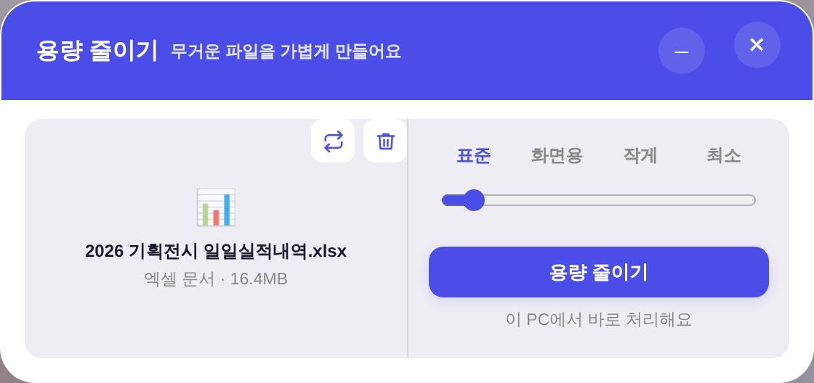

260806_버튼_덜투박_플레이그라운드.html의 ★ 프리셋 승인.
정본 CSS(.btn·.cm-tool) + 토큰 --r-btn에 배선 = 앱 전체 버튼에 적용.
인라인 덧칠 0(패리티 게이트 계약 준수) · 신규 색 0(raw hex 1550 무변).
:focus-visible 미정의 = 키보드 사용자가 어디 있는지 모른다)0 0 0 4px var(--accent-glow) 링 + 깊이 그림자 유지(--btn-sh로 겹쳐 얹음)| 항목 | 전 | 후 |
|---|---|---|
| 라운드 (md / sm) | 10px / 8px | 12px / 10px |
| 패딩 (md) | 10px 20px | 11px 22px |
| 주 버튼 그림자 | 1겹 0 2px 8px α.16 | 2겹 0 1px 2px α.2 + 0 6px 16px α.16 |
| 눌림 | translateY(0) scale(.98) = 작아지기만 | translateY(1px) scale(1) = 판 안으로 |
| 키보드 포커스 | 없음 | 0 0 0 4px var(--accent-glow) |
| 전이 커브 | 브라우저 기본 ease | cubic-bezier(.4,0,.2,1)(기틀 주력) |
.cm-tool | 30px · 라운드 8 · 테두리 0 | 32px(원형 사다리 정본) · 라운드 10 · 테두리 1px |
--accent-glow 토큰, 테두리는 --border 토큰. check_design raw hex 1550/1550 무변..cm-tool이 한 벌로 모임). 인라인 덧칠 0.--r-btn 10→12는 기틀 §3 3점 세트로 처리: 토큰 → docs/디자인기틀.md 등재 → baseline 이력 한 줄.